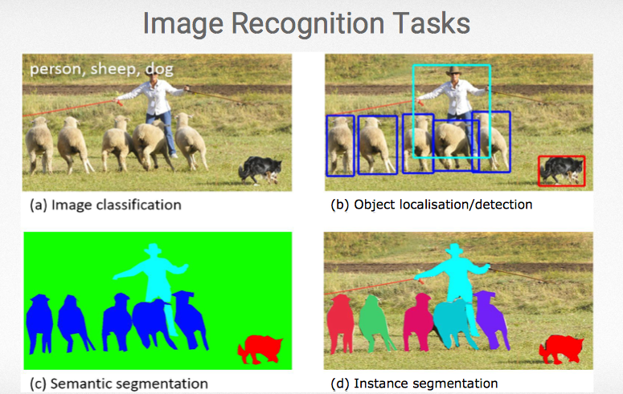
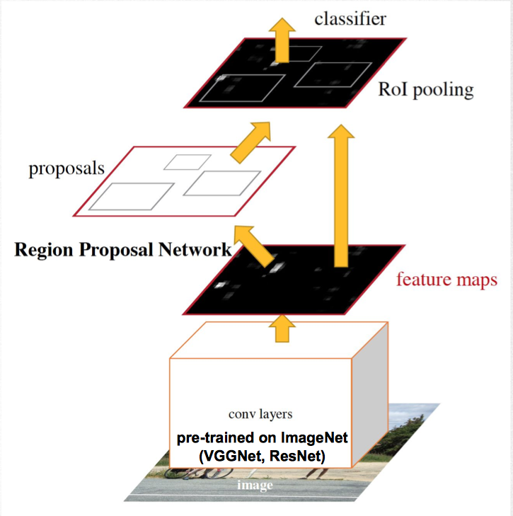
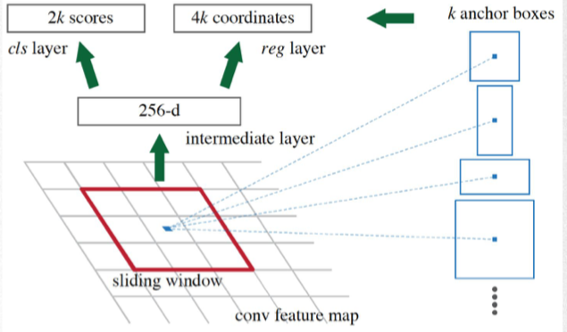
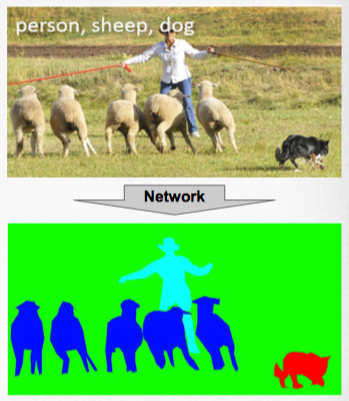
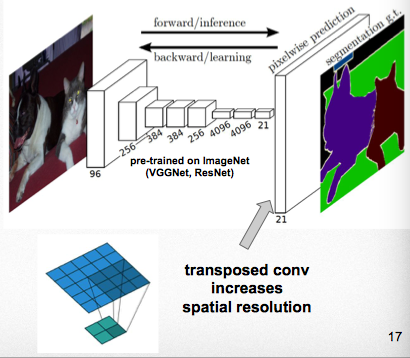
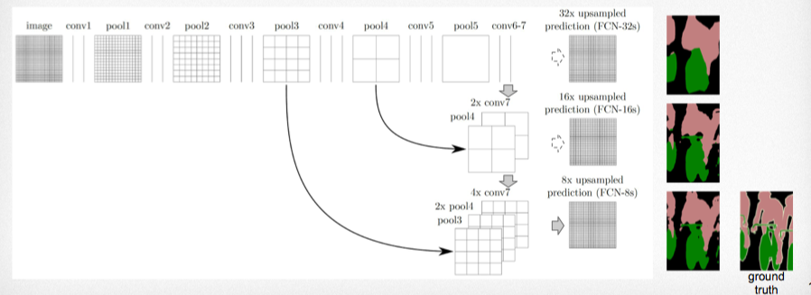

4. Beyond Image Recognition, End-to-End Learning, Embeddings
Overview
- 더복잡한 모델과 일을 하는 End to End 학습에 대한 소개
- 분류를 넘어서: 탐지, 조각화
- End to End case study: 공간 변화 네트워크
- 라벨 없이 배우기
- embedding
- manifolds
- 조합하기 - RL + sequence learing + auxiliary losses
- 미로 찾기를 풀기위해
End to End 학습이란?
- input 과 output 만을 명시하고 input 에서 output 으로의 맵핑을 최적화 문제로 바꾸어 학습하는것.
- 역사
- 2010: 소리를 문자로: Audio $\to$ Deep Net $\to$ Text
- 2012: 사진을 라벨로: Pixels $\to$ Deep Net $\to$ Labels
- 2014: 기계번역: Text $\to$ Deep Net $\to$ Text
- 2018: 로봇: Sensors $\to$ Deep Net $\to$ Action
Beyond ImageNet Classification
Pretraining
- 많은 데이터로 큰 모델을 학습 시키는데에는 많은 시간이 필요하다.
- ImageNet ConvNets 같은 경우는 많은 GPU 로 몇주를 학습 시켜야 한다.
- 이미 다양한 데이터로 미리 학습된 네트워크는 다른 작업들에도 유용 할 것이다.
- 비슷한 클래스들.
- 비슷한 도메인들.
- 이미 학습된 모델을 사용해보자.
- 이미 학습된 모델을 가져온다.
- 다른 네트워크에 연결한다.
- 다른 부분을 학습 시킨다.
- 이식된 미리 학습된 네트워크의 파라미터들은 고정 하거나 느리게 변경한다.
이미지넷 예제
- 훈련된 이미지넷 분류 모델을 가져와서
- 마지막 레이어만 변경 한다.
- ouputs = 새로운 데이터의 클래스들
- 마지막 레이어를 훈련 시킨다.
- 예제
- Imagenet 데이터 $\to$ Covnet $\to$ $\mathbb{R}^{1000}$
- 신규 데이터셋 $\to$ Covnet(위에 모델) $\to$ $\mathbb{R}^{24}$
- 클래스가 24개
- 신규데이터의 이미지가 적을 수록 잘 동작한다.

- a) 해당 이미지에 어떤 클래스들이 있는지 모두 적어라.
- b) 어디에 어떤 오브젝트가 있고 해당 오브젝트의 범위들을 사각형으로 표시해라.
- c) 오브젝트를 픽셀 단위로 분류 해라.
- 양
- d) 오브젝트를 인스턴스 단위로 분류해라.
- 양1, 양2, ...
Object Detection with convNet
- 그림 b) 어디에 어떤 오브젝트가 있고 해당 오브젝트의 범위들을 사각형으로 표시해라.
- 슬라이딩 윈도우를 사용해 모든 영역에 객체가 있는지 확인 하는것.
- 너무 느릴수 있다. 하지만 최적화 가능
- 같은 객체가 여러 번 탐지 될 수 있다.
- 사각틀을 예측 방법
- 사각틀의 꼭지점을 회귀 문제로 푸는것
- 몇개의 객체가 한 개의 이미지에 존재 할 지 몰라서 문제
- 사각틀 제안법
- 모듈을 두개로 분리해 처리
- 사각틀의 위치를 제안하는 모듈
- 제안된 모듈안의 이미지를 분류하는 모듈
Faster R-CNN(region-CNN): Overview

- 제안들을 사용해서 객체 탐색
- 미리 훈련된 이미지 넷을 사용
- 제안 단계
- 지역 제안 하위 망를 사용해서 객체의 위치를 제안 받음
- 최종 단계
- 제안된 사각틀 안에 어떤 객체가 있는지 확인
- 이미지 확인 후 사각틀 자체도 조정 가능
Region proposal network

- 기본적으로 큰 범위의 슬라이딩 윈도우를 사용한다.
- 해당 윈도우의 가운대 점을 anchor 라고 한다.
- 여러 개의 (k = 9) 박스모양을 테스트한다.
- 이미지의 특정 윈도우를 집어 넣으면 해당 윈도우의 anchor 를 기준으로
- 여러 개의 k 박스 모양을 테스트 한후
- 6*k 의 결과 행렬을 리턴한다.
- 각 $k_{i}$ 앵커 박스에 대해서
- $2*k_{i}$ 는 점수로 해당 k 앵커 박스에 오브젝트가 존재하는 확률로 정의한다.
- $4*k_{i}$ 는 앵커를 기준으로 박스 꼭지점들의 상대 좌표를 의미한다.
- 앵커를 기준으로 상대 좌표를 사용하기 때문에 이미지 크기에 상관없이 적용 될 수 있다.
훈련시
- 미리 훈련된 이미지 넷을 정밀하게 최적화 하기 위해 적은 학습 비율을 사용 할 수도 있다.
Semantic segmentation
아래의 상단 이미지를 주면 하단의 이미지를 만드는 ConvNet 을 만들어보자.

- 각각의 픽셀을 클래스별로 라벨을 붙인다.
- 자주 사용 되는 방법 해당도 S에 클래스 만큼의 채널을 만든다.
- $S_{i,j,c}$ - 픽셀 (i, j) 위치가 클래스 c 일 확률
- 사용된 빌딩 블럭들을 마지막에 재연결해서 정보를 전이 시키는 방법도 많이 사용한다.
예제

- 선형 레이어가 없는 완전한 ConvNets
- 마지막의 transopose conv 레이어에서 이전의 풀링 레이러를 사용한다.
- 미리 훈련된 이미지넷 분류기를 사용
- 마지마 바로전 레이너는 21개의 채널을 가지고 있다.
- 20개의 클래스 그리고 배경화면
- 레이어가 중첩 되면서 우리는 위치 관련된 정보를 점점 요약해서 마지막에는 21개의 클래스가 해당 이미지에 존재 가능성을 확률 정보로 남긴다.
- 21개의 레이어를 원래의 해상도로 복구 하기 위해서 우리는 마지막에 transoposed conv 를 사용해 역으로 정보를 키운다.
- 하지만 잘 동작하지 않는다 왜냐 하면 이미 공간 정보를 잃어버린 상태이기 때문이다.
